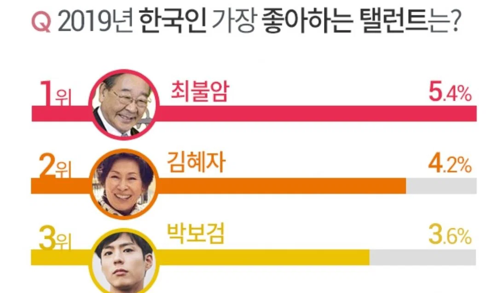

탤런트

탤런트
딴따라
박보검나웃겨
이게 그 탤런트가 선전하던거야
비교적 쵝근까지도 영화 안찍고 드라마만 하면 이 악물고 탤런트라고 불럿음
01년생인데 구라 안치고 살면서 저 단어를 사용해보거나, 친구들이 쓰는걸 본 적 없음
엄마, 아빠가 쓰는거 들어서 뜻은 알지 사용하지는 않음
누가?
유우명인
탈렌트
요즘은 인플루언서라는 단어가 대체한 것 같음
?연예인 아님? 인플루언서는 비방송인도 포함하는거같은데
아님 연예인 중에서도 배우 그 중에서도 드라마 배우를 말함 영화 배우는 예전에도 그냥 영화 배우였음
인플루언서는 보통 연예인이 아니라 인스타나 유튜브 유명인이지
그냥 연예인
인플루언서는 연예인이랑 아예 다른 분야취급하지않음???
틱토커, 유튜버, 스트리머, 인스타 등 개인방송하는 사람과 sns유명인을 말할때 쓰잖아
탈렌트지 탈렌트
탈란트
달란트
달란트 시장에서 달란트 좀 모자랐는데 물건 내어준 교회누나 그립읍니다
근데 탤런트가 정확히 뭘 하는 직업임? 예전부터 들어보긴 했는데 배우, 가수 ,mc 그런것들 중 뭘 하는건지 아직도 모르겠음
연예인임
배우, 그중에서도 tv 드라마 위주로 나오는.
더 과거로 가면 그 탤런트들이 지금 아나운서들마냥 방송사에서 공채로 뽑고 하던 시절이 있었음.
아하
TV드라마 출연하는 사람
달란트 몰라?
TV배우
최불암이 저 당시 저정도였다고? 보니까 나이대도 상관 없는거 같은데
박보검은 뭐여 ㄷㄷㄷ
탈레반은
탤런트라는 용어 자체가 일본 연예계에서 들어온 노근본 외래어라서
배우라는 훨씬 더 좋은 용어가 있는 상황에 굳이 쓸 이유가 없긴해.
이젠 TV에 나오는 배우를 특별히 따로 지칭할 필요도 없고.
https://namu.wiki/w/%ED%83%A4%EB%9F%B0%ED%8A%B8#s-2.2
93년생인데 일부러 쓰고다님
그 탤런트 나온 연속극 봤다
나 저번부에 명동 롯백갔더니 탤런트 박보검 사인회하고있더라 8층엘베에서 내리니 바로 보이게
연기자라는말이 더어울릴듯
+앙케이트
탤런트 공채라는게 있었음
용어 자체는 재능(talent)있는 사람 그러니까 예인(藝人)이라는 뜻이고
저거 쓰는 사람은 늙크크 수준이 아니고 지하철 노약자석 앉는 나이대임
TV배우랑 영화배우랑 경계가 모호해진 지금이라 그냥 '배우'로 통일된듯
무지라는 말 어느순간부투 무지 안쓰지않냐
나 어릴때만 해도 무지 많이 썼는데
무지 맛있다 무지 무섭게 생겼다 날씨 무지 좋다
ㄹㅇ 늙크크 용어 다된듯